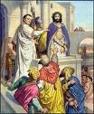
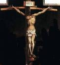

شروعات ۾ کلام هو
هڪ وڏو ڦوٽو؟
هر ڊسمبر، اسان سال جي سڀ کان وڏي جشن جي توقع شروع ڪندا آهيون: ڪرسمس! سڀئي دڪان روشنين ۽ رنگن سان روشن ٿيل آهن (هر سال اڳ کان وڌيڪ روشن)، اسان پنهنجي گهرن جي چوڌاري رکهي ڪومڪا لڳائيندا آهيون ۽ وڻ کي سينگاريو ويندو آهي، ۽ ڪيترن ئي عمارتن جي چوڌاري ڪيترن ئي شهرن جي گهٽين کي چمڪندڙ روشني سان چمڪيو ويندو آهي. ۽ سڀ کان وڏو جوش؟ تحفا! اسان کي ڇا حاصل ٿيندو؟ ڇا اهو ٿيندو جيڪو اسان کي اميد هئي؟ اسان صرف 25 ڊسمبر جو انتظار نٿا ڪري سگهون!
هڪ خاموش داخلا
پوء، اهو 2000 سال اڳ ٿيو؟ ڇا ماڻھو بي صبريءَ سان انتظار ڪري رھيا ھئا: ڇا انھن یسوع جي ڄمڻ جي انتظار ۾ پنھنجا گھر سجايا ھئا؟ ڇا انهن هڪ ٻئي کي تحفا خريد ڪيو هن ڊگهي انتظار واري جنم جي انتظار ۾؟ جڏهن هو ڄائو هو، ڇا سڄي دنيا ۾ اعلان ڪيو ويو ته ڇوٽڪارو ڏيندڙ آخرڪار آيو هو؟
بلڪل نه.

جڏهن يسوع بيٿلحم ۾ پيدا ٿيو، جيڪو دائود جي شهر جي نالي سان پڻ مشهور آهي (ياد آهي؟)، صرف چند ماڻهو هن جي باري ۾ ڄاڻن ٿا. اتي مريم، یسوع جي ماء، ۽ يوسف، سندس شادي هئي. جنهن سرائي ۾ مريم ۽ يوسف رهجي ويا هئا، تن کي شايد خبر هئي ته ان عورت جنم ڏنو هو، پر انهن لاءِ اها ڪا خاص اهميت نه هئي.
پر اسان ڄاڻون ٿا ته آسمان ۾ وڏي خوشي هئي، ڇاڪاڻ ته لوقا 2: 8-14 اسان کي ٻڌائي ٿو ته رات جو یسوع پيدا ٿيو، فرشتن جو هڪ وڏو گروهه ڪجهه رڍن ڏانهن ظاهر ٿيو. انهن نه رڳو اهو اعلان ڪيو ته عيسى نالي هڪ ٻار پيدا ٿيو هو، پر انهن حقيقت ۾ اعلان ڪيو ته هو اهو ئي مسيح هو جنهن جو يهودي ماڻهو انتظار ڪري رهيا هئا!
پر ان کي ٽيهه سال لڳندا، ان کان اڳ جو ڪو ٻيو ان کي ڳولڻ شروع ڪندو.

چار ماڻهو، چار ڪهاڻيون
يسوع جي موت، جيئري ٿيڻ ۽ چڙهڻ کان پوءِ سالن ۾، چار مختلف ماڻهو يسوع جي زندگي بابت لکڻ لاءِ متاثر ٿيا. نئين عهد نامي جا پهريان چار ڪتاب انهن ماڻهن جي نالي تي رکيا ويا آهن جن اهي سوانح عمريون لکيون (انهن کي عام طور تي انجيل سڏيو ويندو آهي): متي، مارڪ، لوقا ۽ جان.انهن هڪ ٻئي سان بحث نه ڪيو. ممڪن آهي ته انهن کي اها خبر نه هجي ته حضرت عيسيٰ جو قصو ڪو ٻيو لکي رهيو آهي. متي، لوقا ۽ يوحنا شايد مارڪ جي انجيل کي ڄاتو ۽ پڙهيو هوندو. عالمن جو خيال آهي ته هيءَ حضرت عيسيٰ مسيح جي پهرين سوانح عمري هئي. پر سڀئي چار انجيل هڪ ٻئي کان آزاد طور تي لکيا ويا.

جڏهن ماڻهو هڪ واقعو بابت هڪ ڪهاڻي ٻڌائي، اهي عام طور تي شامل ڪرڻ جي ڪوشش ڪندا ته اهي سڀ کان اهم حصا آهن. متي، مرقس، لوقا ۽ يوحنا سان به ائين ئي ٿيو. ڪجهه واقعا ۽ ڪهاڻيون شامل آهن ته ٻيا نه آهن؛ ڪجھ واقعن کي ٿوري مختلف ترتيب ۾ ٻڌايو ويو آهي.
مثال طور، صرف متي ۽ لوقا يسوع جي پيدائش جي ڪهاڻي ٻڌائي ٿو. شايد، لوقا جي ذهن ۾، ماڻهن لاء اهو ڄاڻڻ ضروري هو ته عيسى هڪ ڪنوار مان پيدا ٿيو هو. مريم جي منگيتر، يوسف، یسوع جو حقيقي پيء نه هو؛ يسوع خدا جو فرزند هو. (لوقا 1:26-38)
متي جي خوشخبري يسوع جي خانداني وڻ سان شروع ٿئي ٿي. ڇا توهان کي ياد آهي ته ڪيئن، گهڻو وقت اڳ، خدا ابراھيم سان واعدو ڪيو هو ته دنيا کي برڪت ڏني ويندي هڪ بادشاهه جيڪو سندس اولاد مان ايندو (پيدائش 12 باب 3 آيت)؟ متي اسان کي ٻڌائڻ جو خيال رکي ٿو ته يسوع بادشاهه دائود جو سڌو سنئون اولاد هو، جيڪو ابراهيم جو سڌو سنئون اولاد هو. يسوع هن قديم نبوت جي پوري ٿيڻ وارو هو.
مرقس ۽ يوحنا جي صورت ۾، انهن فرض ڪيو ته، جڏهن اهي يسوع بابت لکي رهيا هئا، هر ڪنهن کي خبر پوندي ته اهي ڇا ڳالهائي رهيا هئا: یسوع پنهنجي ڏينهن ۾ تمام گهڻو مشهور هو. تنهن ڪري، مارڪ ۽ يوحنا عيسى بابت پنهنجون ڳالهيون شروع ڪن ٿا جڏهن هن پنهنجي زميني وزارت کي شروع ڪيو، اهو آهي، جڏهن يسوع اٽڪل ٽيهه سالن جو هو.

هڪ غير متوقع مسيحا
جڏهن اسان کي انهن نبين جي باري ۾ معلوم ٿيو جن پيشنگوئي ڪئي هئي ته بني اسرائيل صور ۽ بابل ڏانهن زوال پذير ٿيندو، اسان کي اهو به معلوم ٿيو ته اهي ساڳيا نبي اڳڪٿي ڪري رهيا هئا ته بادشاهه دائود جي نسل مان هڪ بادشاهه، هڪ مسيحا ايندو ۽ هڪ نجات ڏيندڙ پيدا ٿيندو. انهن اڳڪٿين يهودين کي اميد ڏني ته اسرائيل ٻيهر هڪ عظيم قوم بڻجي ويندو، ته هڪ بادشاهه اچي اسرائيل جي سڀني دشمنن کي فتح ڪري ۽ انهن کي هڪ سپر پاور بڻائيندو جيڪو دنيا تي حڪمراني ڪندو.پر يهودي سڀ اڳڪٿيون نه پڙهي رهيا هئا. يا، جيڪڏهن اهي پڙهي رهيا هئا، انهن مان ڪجهه غلط ٿي رهيا هئا. نبين مسيح جي ٻه وضاحتون ڏنيون جيڪي خدا موڪليندو. هڪ هو، حقيقت ۾، هڪ طاقتور حڪمران ٿيڻ. يهودين کي اها ڳالهه سمجهه ۾ نه آئي ته هي بادشاهه ڪنهن نهايت غير معمولي هنڌ تان ايندو ۽ هو وڏي شوق سان نه ايندو (ننڍي بيت لحم جي خاموش رات ياد آهي؟) هي نئون بادشاهه اهڙو ماڻهو هوندو جنهن کي ڏک، غم جي خبر هوندي. ۽ درد، پر بادشاهي جلال ۽ طاقت نه.
هڪ شڪست، مايوس ماڻهن جي حيثيت ۾، يهودين کي مسيح وانگر نه ڳولي رهيا هئا جهڙوڪ عاجز یسوع. اهي هن کان وڌيڪ عجيب ماڻهو ڳولي رهيا هئا.
۽ اھو ظاھر ٿيو تہ جڏھن یسوع آيو ۽ انھن جي وچ ۾ رھيو، تڏھن انھن مسيح کي اکين ۾ نہ سڃاتو.

يسوع جي تعليم
ياد رهي ته يسوع هڪ جاء تي وڌيو جيڪو ڪنهن ٻئي ملڪ جي حڪمراني هئي: ان وقت تائين، اهو طاقتور رومن سلطنت هو. يسوع هڪ تمام سادي سماج ۾ وڌيو. يهودي ماڻهو ڏاڍا مذهبي هئا، ۽ هن جا پاڙيسري هارين يا ماهيگير يا واپاري هئا (يوسف، هن جي ماء جو مڙس، واپار جي لحاظ کان هڪ ڪاريگر هو).
شايد انھيءَ سبب لاءِ، یسوع روحاني سچائيءَ کي سيکارڻ جي ڪوشش ڪئي ڪھاڻيون ٻڌائيندي، جن کي تمثيل سڏيو ويندو آھي، جنھن ۾ اڪثر شيون شامل هونديون آھن جيڪي سندس برادريءَ جا ماڻھو واقف ھوندا:

- هڪ هاري پنهنجي پوک پوکي ٿو (متي 13: 2-23).
- هڪ پٽ جيڪو پنهنجي والدين جي خلاف بغاوت ڪري ٿو، پر پنهنجي گناهن جي وڏي پشيماني سان انهن ڏانهن موٽي ٿو. (لوقا 15:11-32)
- هڪ ريڍار جيڪو پنهنجي رڍن مان هڪ وڃائي ٿو (متي 18:10-14)

فريسي
يسوع جي ڏينهن ۾، پادرين (بائبل انهن کي فريسي پڻ سڏيندو آهي - هڪ لفظ جو مطلب آهي "جدا") يهودين جي روزاني زندگي تي حڪومت ڪئي. پادرين بني اسرائيل جي ٻارهن قبيلن مان آيا هئا جن کي خدا خاص طور تي هن ڪردار لاءِ چونڊيو هو: ليوي (ليوي جي قبيلي مان). هن ان کي پنهنجو فرض سمجهي يهودين کي گمراهه ٿيڻ کان روڪيو جيئن اهي ماضي ۾ ڪندا هئا. اهو هن جو ڪم هو، هن ماڻهن کي صحيفن پڙهڻ ۽ تفسير ڪرڻ جو ڪم ڪيو. (ياد رکو جيڪو اسان اڳ ۾ چيو هو ته خدا سڀني لاءِ بائبل جو ارادو ڪيو؟)
يسوع لاوي جي قبيلي مان نه هو، تنهنڪري یسوع هڪ پادري نه هو.

هڪ ربي، يا ڪلام جي سچائي ۽ علم جي استاد ٿيڻ لاء، هڪ انسان کي هڪ خاص ربنياتي اسڪول ۾ تربيت جي ڊگهي عرصي کان گذري ٿو.
يسوع ربنيڪل اسڪول ۾ نه ويو هو، تنهنڪري فريسيس هن کي استاد ٿيڻ لاء "قابل" نه سمجهيو.
تنهن ڪري، تقريبن پنهنجي وزارت جي شروعات کان وٺي، يسوع مذهبي اختيارين سان اختلاف هو. يسوع جي تعليم ٻڌڻ لاءِ ماڻهن جا ميڙ گڏ ٿيا. هن جي تعليمات جي سڀ کان مشهور مجموعن مان هڪ ۾، جنهن کي جبل تي واعظ جي نالي سان سڃاتو وڃي ٿو (ٻنهي متي 5 ۽ لوقا 6 ۾ مليا آهن)، تقريبن هر نقطو هن جي خلاف هو، جيڪو هو ٺاهي رهيو هو، فريسي ماڻهن کي قائل ڪيو.
ڪجھ مکيه خيال جيڪي يسوع چاهيو ٿا ته سندس پوئلڳن کي سکڻ گهرجي:
- خدا ماڻهن سان پيار ڪري ٿو ۽ چاهي ٿو ته هو بدلي ۾ هن سان پيار ڪن. خدا لاءِ توهان جي محبت کي ظاهر ڪرڻ جو هڪ طريقو اهو آهي ته نه رڳو قانون جي فرمانبرداري ڪريو پر روح جي پڻ. تنهن ڪري، ايماندار هجڻ کان علاوه، يسوع پنهنجي پوئلڳن کي چيو ته مهربان، رحمدل ۽ انصاف سان.
- يسوع چاهي ٿو ته هن جا پوئلڳ انهن جي پيار سان سڃاتا وڃن: انهن جي ساٿي مومنن لاءِ پيار، حتي انهن جي دشمنن لاءِ. خدا اسان جي گناهن کي معاف ڪرڻ جي آڇ ڪئي آهي؛ هو چاهي ٿو ته اسان هڪ ٻئي کي معاف ڪريون.
سڀ کان اهم شيء جيڪا يسوع پنهنجي پوئلڳن کي ٻڌائڻ چاهي ٿي ته هو، یسوع، خدا جو فرزند هو، ۽ گناهه کان ڇوٽڪارو صرف هن جي ذريعي آيو هو. بائبل ۾ سڀ کان وڌيڪ مشهور آيتن مان هڪ نئين عهد جو اعلان ڪندي جيڪو خدا انسانن سان ٺاهي رهيو هو، يوحنا 3 باب 16 آيت:
ڇالاءِجو خدا دنيا سان ايترو پيار ڪيو جو ھن پنھنجو ھڪڙو ئي فرزند ڏنو، انھيءَ لاءِ تہ جيڪوبہ مٿس ايمان آڻي سو برباد نہ ٿئي پر کيس دائمي زندگي ملي.
يسوع پاران اهو اعلان ٻن سببن جي ڪري انقلابي هو: پهريون، اهو خيال ته یسوع خدا جو فرزند هو، ڪيترن ئي يهودين کي ناقابل قبول هو. صرف هڪ ماڻهو ڪيئن خدا ٿي سگهي ٿو؟ هڪ ٻيو خيال جيڪو يسوع جي ڏينهن جي مذهبي اڳواڻن کي قبول نه ڪري سگهيو اهو هو ته نجات هاڻي يهودين لاء خاص نه هئي. يسوع چيو ته جيڪو به هن تي ايمان آڻيندو اهو خدا جي بادشاهي ۾ داخل ٿي سگهي ٿو (يوحنا 1 باب 12 آيت).
صدوق
صدوق، يهودين جو هڪ نمايان، اڪثر مالدار گروهه، جيڪو يسوع جي زماني ۾ رهندو هو، رومن سان سياسي انتظام ڪيو هو، تنهنڪري انهن کي سياسي طاقت جو هڪ خاص مقدار حاصل ڪيو. صدوقين ڪڏهن ڪڏهن پنهنجن ساٿي يهودين کان رومن ٽيڪس گڏ ڪرڻ جو ڪم ورتو، ۽ اڪثر ان جي باري ۾ بي ايمان هئا، ماڻهن کي پنهنجي لاء هڪ حصو رکڻ لاء اصل ۾ انهن کان وڌيڪ ادا ڪرڻ جي ضرورت هئي. صدوقي ڪيترن ئي يهودين طرفان غدار سمجهي رهيا هئا ڇاڪاڻ ته انهن جي نفرت رومن سان ويجهن لاڳاپن جي ڪري.
اڪثر يهودين ۾ بغاوت جي ڳالهه ڪئي ويندي هئي. اهي رومي حڪمراني جي سختي هيٺ محنت ڪري رهيا هئا. صدوق يهودين ۽ رومن جي وچ ۾ امن قائم رکڻ کي پنهنجو فرض سمجهندا هئا. صدوقين جو خيال هو ته يهودي رومن کي جيتري تڪليف ڏيندا، اوترو ئي سڀني لاءِ آسان ٿيندو.

يسوع سان مخالفت
جيئن اسان اڳ ۾ ڏٺو، يسوع ڪثرت کي سيکاريندو رهيو ۽ خدا جي باري ۾ خوشخبري ۽ هر ڪنهن کي سندس پيار جي باري ۾ ٻڌايو. فريسين کي اهو بلڪل پسند نه آيو. هو يهودين جي وچ ۾ واحد مذهبي اختيار ٿيڻ چاهي ٿو.

صدوقين کي به اهو پسند نه آيو ته هجوم جيڪو يسوع ڏانهن راغب ڪري رهيو هو. ماڻهن جي ميڙ کي آساني سان ڪنٽرول نه ٿي سگهيو. جيڪڏهن يسوع چاهيو ته هن جي چوڌاري ميڙ روم جي خلاف بغاوت ۾ هن جي پيروي ڪن، اهي هن کي روڪڻ لاء ڇا ڪري سگھن ها؟
صدوقن کي خبر هئي ته يهودين جو هڪ وڏو ميڙ به رومي فوج جي طاقت سان مقابلو ڪري نه سگهندو. جيڪڏھن رومن کي يھودين جي بغاوت کي دٻائڻو ھو، اھي بلڪل انھن کي چيڀاٽيندا (۽ اٽڪل 35 سال یسوع جي زندگيءَ ۾، انھن ائين ئي ڪيو). انهن جي سياسي طاقت جو هاڻي رومن لاءِ ڪا به معنيٰ نه هوندي، ۽ صدوقي به حضرت عيسيٰ وانگر پنهنجي طاقت وڃائڻ وارا نه هئا!

سڀ کان بدترين شيء جيڪا يسوع ڪئي هئي اها ماڻهن کي اعلان ڪيو هو ته هو اصل ۾ خدا جو فرزند هو.
يسوع انهن کي ٻڌايو ته هو اهو ئي مسيح آهي جنهن جو هو گهڻي وقت کان انتظار ڪري رهيا هئا. فريسين لاءِ، اها توهين هئي (خدا جي وڏي بي عزتي)! يهودي قانون تحت اهو هڪ جرم هو جنهن جي سزا موت آهي.
بار بار، يسوع مسيح ٿيڻ جي دعوي کي هٿي ڏيڻ لاء نشانيون ۽ معجزا ڪيا: هن بيمار کي شفا ڏني، انڌن کي اکيون ڏنيون، ۽ منڊا کي ٻيهر هلايو. هن هڪ انسان کي به مئلن مان جيئرو ڪيو!
يسوع کي فريسين لاءِ خطرو سمجهيو ويندو هو (ڇاڪاڻ ته هو ماڻهن کي انهن جي اختيار تي شڪ ڪرڻ جو سبب بڻائيندو هو) ۽ صدوقين لاءِ (ڇاڪاڻ ته هو شايد انهن جي طاقت لاءِ خطرو هجي).

فريسي ۽ صدوقي عام طور تي هڪ ٻئي سان دوستي يا تعاون ڪندڙ نه هئا، پر هاڻي انهن جو هڪ گڏيل دشمن هو - یسوع.
ھڪڙي رات، جڏھن عيسيٰ دعا ڪري رھيو ھو، يھوداہ اسڪريوٽ، ھڪڙو ماڻھو جيڪو عيسيٰ جي ويجھن دوستن (سندس ٻارھن شاگردن) مان ھڪڙو ھو، فريسين ۽ صدوقين جي ھڪڙي ٽولي کي وٺي ويو، جتي ھن کي خبر ھئي ته عيسيٰ دعا ڪري رھيو آھي، گٿسمني جي باغ ۾. يسوع گرفتار ٿيڻ جي مزاحمت نه ڪئي، جيتوڻيڪ هن کي خبر هئي ته هن ڪو به ڏوهه نه ڪيو هو.
يسوع تي الزام لڳائيندڙ کيس هڪ ڳجهي آزمائش لاءِ مندر جي وڏي پادري قائفا وٽ وٺي ويا. انهن ڪائفا کي ٻڌايو ته يسوع مسيح هجڻ جي دعوي ڪرڻ لاء ڪفر جو مجرم هو.
جڏھن ھو سردار ڪاھن جي اڳيان بيٺو، تڏھن عيسيٰ چيو تہ ”آءٌ مسيح آھيان ۽ تون مون کي خدا جي ساڄي پاسي ويٺي ڏسندين. (مرقس 14:62)
جيتوڻيڪ ڪوڙا شاھد گڏ ڪيا ويا ته يسوع جي خلاف "ثبوت" ڏيو، ڪيفا فيصلو ڪيو ته یسوع جو بيان اڪيلو جرم جو اعتراف هو. هن جو فيصلو هو يسوع کي موت جي سزا ڏيڻ.
رومي گورنر پيلاطس جي اجازت کان سواءِ يهودين کي قتل نه ٿي ڪري سگھجي. پادرين عيسيٰ کي پيلاطس جي اڳيان وٺي آيا ۽ کين ٻڌايو ته عيسيٰ غداري ڪئي آھي: ھو مسيحا ٿيڻ جي دعويٰ ڪري ٿو، تنھنڪري چيائون تہ ھي اھو آھي جيڪو پاڻ کي يھودين جو بادشاھہ سڏائي ٿو. رومن قانون تحت، ڪو به پاڻ کي بادشاهه نه سڏيندو هو سواء سيزر.
پلاطس واقعي اهو نه سوچيو ته يسوع بادشاهه ٿيڻ جي هڪ سنگين دعويٰ ڪري رهيو آهي، ڇاڪاڻ ته جڏهن هو آزمائش ۾ هو ته هن پنهنجو دفاع به پيش نه ڪيو هو. پر يهودي پادرين اصرار ڪيو ته یسوع کي قتل ڪيو وڃي. ايستائين جو پِلاطس کين سزا ڏني قاتل، برابا کي آزاد ڪرڻ يا يسوع کي آزاد ڪرڻ جو اختيار پيش ڪيو، تڏهن به ماڻهن رڙ ڪئي ته يسوع کي موت جي سزا ڏني وڃي. (مرقس 15: 6-13)
يسوع مري ويو ۽ وري جيئرو ڪيو ويو
صليبي سزا موت جي سزا جو هڪ روپ هو، عام طور تي رومن طرفان استعمال ڪيو ويندو هو. اهو مرڻ جو سڀ کان وڌيڪ شرمناڪ طريقو هو. جيتوڻيڪ يسوع عام طور تي تصويرن ۾ ظاهر ڪيو ويو آهي جيئن هڪ لنگر پائڻ، هن کي اصل ۾ هن جي لباس کان هٽايو ويو هو، تنهنڪري هو سڀني کي ڏسڻ لاء ننگا هو. اهو خاص طور تي شرمناڪ هو ڇو ته صليب تي چڙهڻ رومن طرفان بدترين قسم جي ڏوهن لاءِ محفوظ ڪيو ويو هو.
مارڻ جي هڪ رات کان پوءِ، پھريائين ھن جي يهودين ۽ پوءِ رومي محافظن پاران، عيسيٰ کي چيو ويو ته پنھنجو صليب کڻي انھيءَ جاءِ ڏانھن، جتي کيس صليب تي چاڙھيو وڃي. هو پنهنجن سڀني ڌڪن کان ايترو ته ڪمزور هو جو صليب جو وزن به برداشت نه ڪري سگهيو. ھڪڙي لنگھندڙ غلام کي چيو ويو ته عيسيٰ جو صليب کڻي.
جڏهن اهي صليب جي جاءِ تي پهتا ته رومي محافظن يسوع جي هٿن ۽ پيرن کي صليب تي چاڙهيو. جيڪي سپاهي هن کي اتي وٺي آيا، تن هن کان جيڪي ڪپڙا ورتا، تن لاءِ جوا هنيا.
جيتوڻيڪ صليب تي مرڻ عام طور تي ڪيترن ئي ڏينهن جي سخت تڪليفن کي وٺي ها، یسوع جي زخم ۽ رت جي ضايع ٿيڻ کان اڳ رات جو شايد هن جي موت کي تيز ڪيو. هو ان ئي ڏينهن مري ويو جنهن ڏينهن هن کي صليب تي چاڙهيو ويو هو.

جڏهن يسوع جي اڪثر دوستن هن کي ڇڏي ڏنو جڏهن هو گٿسمني جي باغ ۾ گرفتار ڪيو ويو، اتي ارميٿيا جو یوسف نالي هڪ شخص هو، جيڪو پائلٽ وٽ ويو ۽ يسوع جي لاش کي مناسب طور تي دفن ڪرڻ لاء چيو.
هن يسوع جي لاش کي ڪپڙي ۾ ويڙهيو ۽ ان کي قبر ۾ رکيو جيڪو پٿر مان ٺهيل هو. ان کان پوء هن دروازي تي هڪ وڏو پٿر لٿو ۽ پنهنجي رستي ڏانهن روانو ٿيو.
يسوع پنهنجي شاگردن کي ڪيترائي ڀيرا ٻڌائڻ جي ڪوشش ڪئي ته هن کي انسانيت جي گناهن جي آخري قرباني طور مرڻو پوندو، پر اهي ڪڏهن به سمجهي نه سگهيا ته یسوع خدا جو فرزند هو. جيڪڏھن اھو مسيح آھي جيڪو خدا جو واعدو ڪيو ويو آھي، اھو ڪيئن مري سگھي ٿو، اھي سمجھندا آھن؟
یسوع جي مرڻ کان پوءِ ٽئين ڏينھن تي، ڪي عورتون جيڪي سندس دوست ھيون، قبر ڏانھن ويون جتي کيس دفن ڪيو ويو..

اهو يهودين جو رواج هو ته مئل کي دفن ڪرڻ لاء خاص مصالحن سان مسح ڪيو وڃي. اهي جيئن ئي ويا، پاڻ ۾ سوچڻ لڳا ته قبر جي اڳيان پٿر کي ڪيئن منتقل ڪندا؟
عورتون جڏهن اتي پهتيون ته اهو ڏسي حيران ٿي ويون ته پٿر اڳي ئي لڪي ويو هو ۽ قبر خالي هئي.
ھڪڙي ملائڪ، جيڪو زمين تي ويٺو ھو، جتي یسوع جو لاش ھو، تنھن کين چيو تہ ”ڊڄو نه! يسوع مئلن مان جيئرو ٿي اٿيو آهي، جيئن هن چيو هو ته هو ڪندو! ملائڪ عورتن کي چيو ته واپس پنهنجن دوستن وٽ وڃو ۽ کين اها وڏي خبر ٻڌاءِ ته یسوع مئلن مان جيئرو ٿي اٿيو آهي. (مرقس 16: 6-7)
جيئن يهودي هر سال فسح جو جشن ملهائيندا آهن مصر ۾ غلاميءَ مان نجات حاصل ڪرڻ جي ياد ۾، يسوع جا پيروڪار ايسٽر آچر کي تاريخ جي سڀ کان شاندار واقعي جي طور تي ملهائيندا آهن: یسوع مئلن مان جيئرو ٿيو، موت جي طاقت، انسانن کي فتح ڪندي ۽ اسان جي گناهن جي معافي فراهم ڪندي. هميشه لاءِ.
قدرتي طور، يسوع جا دوست ان تي يقين نه ڪري سگهيا جڏهن انهن ٻڌو ته عيسى پنهنجي قبر ۾ نه هو.
پر يسوع باقي يارنهن شاگردن کي پنهنجي جيئري ٿيڻ کان پوءِ ڪيترائي ڀيرا ظاهر ٿيو. هن گهڻو وقت انهن سان ڳالهائڻ ۾ گذاريو ته هو ڪيترين ئي اڳڪٿين کي ڪيئن پورو ڪري رهيو آهي، ۽ آخرڪار انهن جون اکيون انهن سڀني حقيقتن ڏانهن کُلي ويون جيڪي يسوع کين صليب تي چاڙهڻ کان اڳ ٻڌايو هو. (لوقا 24:27)

يسوع آسمان ۾ داخل ٿيو
يسوع پنهنجي جيئري ٿيڻ کان پوءِ چاليهن ڏينهن تائين شاگردن کي ظاهر ڪيو. هڪ دفعي، جڏهن هو انهن سان گڏ ماني کائي رهيو هو، هن انهن کي چيو ته اهي يروشلم نه ڇڏين جيستائين انهن کي روح القدس جو تحفو نه ملي، جنهن جو انهن سان واعدو ڪيو ويو هو. (يوحنا 14:16)
آخري دفعو يسوع انهن کي ظاهر ڪيو، شاگردن کانئس پڇيو ته ڇا هو هاڻي اسرائيل کي ان جي اڳوڻي شان ڏانهن بحال ڪرڻ وارو آهي. يسوع جواب ڏنو ته اهو توهان جي وس ۾ ناهي ته توهان انهن وقتن ۽ موسمن کي ڄاڻو ٿا جيڪي پيء پنهنجي اختيار ۾ رکيا آهن. (رسولن جا ڪم 1 باب 7 آيت)
۽ جڏھن اھي سڀيئي ساڻس گڏ بيٺا ھئا، تڏھن عيسيٰ انھن جي اکين اڳيان آسمان ڏانھن کنيو ويو. شاگرد ڏسندا رهيا ۽ ڏسندا رهيا جيستائين اهي يسوع کي وڌيڪ نه ڏسي سگهيا. يسوع پنهنجي پيء سان گڏ ٿيڻ لاء آسمان ڏانهن ويو، پر ڪهاڻي اتي ختم نه ٿيو. حقيقت ۾، اها صرف شروعات هئي!